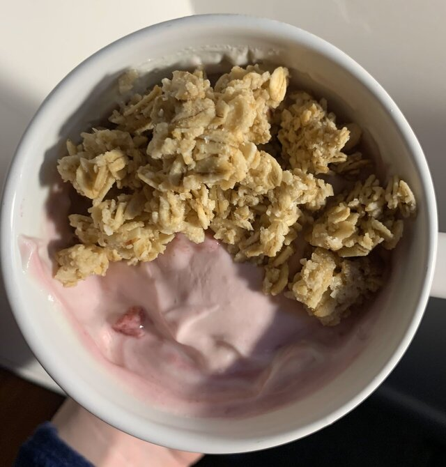
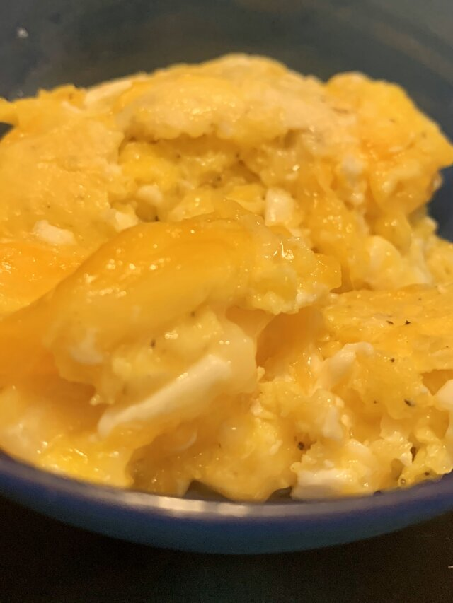
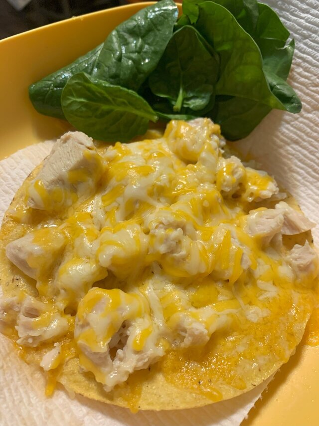
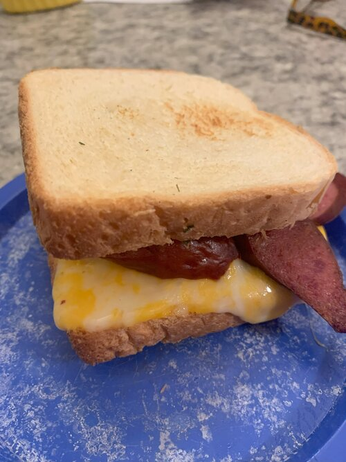

Breakfast

Yogurt
Ingredients:
- 1 cup frozen berries
- ¾ cup yogurt
- ⅓ cup granola
- (Depending on the type of yogurt you use, honey can be the perfect sweetener)
- (Reminder: you can measure with your ♥️)
Recipe:
- Defrost the berries in a mug for 30 seconds to 1 minute or until unfrozen, in the microwave.
- Add your yogurt and mix! Sprinkle granola and you are set!
Veggie Scramble
Ingredients:
- 2-4 eggs
- butter/spray
- ⅓ cup shredded cheese
- ⅓ cup spinach
- salt & pepper
- + any veggies you have on hand
Recipe:
- Spray/butter your pan over medium heat.
- When warm, crack your eggs and mix. Season with salt and pepper to taste.
- Add your veggies. Flip eggs with veggies until combined and cooked. When almost fully cooked add cheese.
- Eggcellent source of protein to start the day!

Lunch

Quick Lunch Plate
Ingredients:
- 1 tostada, 1 tortilla, or a hand full tortillas chips
- 2 slices lunch meat/left over meat
- ½ cup cheese
- ½ cup spinach + other veggies (tomato, avocado)
- spoonful sour cream
Recipe:
- Lay down your tostada, tortilla, or chips, add your meat and cheese.
- Microwave until the cheese is melted.
- Add your veggies, sourcream and eat it up!
Grilled Cheese With Mayo
Ingredients:
- 2 slices of bread
- butter
- mayo
- ½ cup cheese
- 1-2 slices of lunch meat
Recipe:
- Heat a pan over medium heat, add your butter.
- Spread mayo on one side of your bread, lay it flat in the heated pan. Layer cheese, lunch meat, and cheese on the first slice of bread.
- Add the other slice of bread and spread more mayo on the top side.
- Cook for 2-4 minutes on each side or until the cheese is melted and the bread is golden.
- Serve with any snacks, veggies, or fruits you would like!
